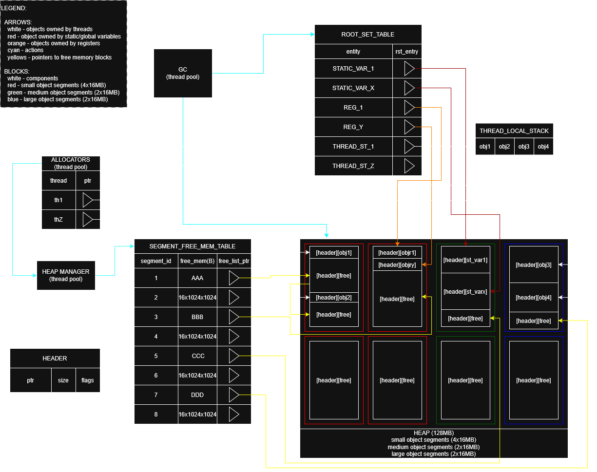

|
GCSIM
|
Mark-Sweep GC simulator written in C++23.
makeTo start the simulations, run:

heap consists of 8 segments, 16MB each:
each block on the heap starts with header, which consists of:
root_set_table uses hash_map to map name of the root to a pointer to the root_set_base.
root_set_base types:
thread_local_stack uses indexed_stack to store variables allocated by the thread, indexed_stack stores pointers to headers on the heap.
thread_local_stack has a hash_map that maps name of the variable to its index for easier reassignation and deletion.
global_root and register_root have pointers to headers on the heap.
segment_free_memory_table uses hash_map that maps index of the segment to segment_info.
segment_free_memory_table_entry consists of:
mark-sweep stop-the-world garbage_collector.
during its execution all allocator threads are sleeping.
garbage_collector uses thread pool to mark all objects reachable from the root_set_table.
garbage_collector uses thread_pool to sweep all segments.
heap_manager manages all allocations.
heap_manager owns root_set_table, segment_free_memory_table and heap.
garbage_collector is run either periodically or on allocation failure if enough time has passed since last garbage collection.
heap_manager uses thread_pool to coalesce free segments after the garbage collection.
allocators simulate multi-threaded allocation of the memory on the heap.
allocators use thread_pool to simulate multi-threaded allocation from threads, global variables and registers.
simulation has two modes:
after simulation performance is measured in: